에너지관리기사 (2017-03-05 기출문제)
1과목: 연소공학
1. 프로판(C3H8) 5Nm3를 이론산소량으로 완전연소시켰을 때의 건연소 가스량은 몇 Nm3인가?
- 5
- 10
- 15
- 20
(정답률: 67%)
2. 다음 집진장치 중에서 미립자 크기에 관계없이 집진효율이 가장 높은 장치는?
- 세정 집진장치
- 여과 집진장치
- 중력 집진장치
- 원심력 집진장치
(정답률: 72%)

3. 연소 시 100℃에서 500℃로 온도가 상승하였을 경우 500℃의 열복사 에너지는 100℃에서의 열복사 에너지의 약 몇 배가 되겠는가?
- 16.2
- 17.1
- 18.5
- 19.3
(정답률: 50%)
4. 고체연료의 연료비를 식으로 바르게 나타낸 것은?
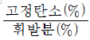
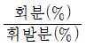
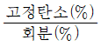
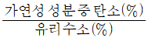
(정답률: 88%)
5. 일산화탄소 1Nm3를 연소시키는데 필요한 공기량(Nm3)은 약 얼마인가?
- 2.38
- 2.67
- 4.31
- 4.76
(정답률: 63%)
6. 기체연료의 특징으로 틀린 것은?
- 연소효율이 높다.
- 고온을 얻기 쉽다.
- 단위 용적당 발열량이 크다.
- 누출되기 쉽고 폭발의 위험성이 크다.
(정답률: 81%)
7. 기체 연료의 저장방식이 아닌 것은?
- 유수식
- 고압식
- 가열식
- 무수식
(정답률: 82%)
8. 어떤 열설비에서 연료가 완전연소하였을 경우 배기가스 내의 과잉 산소농도가 10%이었다. 이 때 연소기기의 공기비는 약 얼마인가?
- 1.0
- 1.5
- 1.9
- 2.5
(정답률: 59%)
9. 부탄(C4H10) 1kg의 이론 습배기가스량은 약 몇 Nm3/kg인가?
- 10
- 13
- 16
- 19
(정답률: 41%)
10. 코크스 고온 건류온도(℃)는?
- 500~600
- 1000~1200
- 1500~1800
- 2000~2500
(정답률: 56%)
11. 액화석유가스를 저장하는 가스설비의 내압성능에 대한 설명으로 옳은 것은?
- 최대압력의 1.2배 이상의 압력으로 내압시험을 실시하여 이상이 없어야 한다.
- 최대압력의 1.5배 이상의 압력으로 내압시험을 실시하여 이상이 없어야 한다.
- 상용압력의 1.2배 이상의 압력으로 내압시험을 실시하여 이상이 없어야 한다.
- 상용압력의 1.5배 이상의 압력으로 내압시험을 실시하여 이상이 없어야 한다.
(정답률: 74%)
12. 메탄 50V%, 에탄 25V%, 프로판 25V%가 섞여 있는 혼합 기체의 공기 중에서의 연소하 한계는 약 몇 %인가? (단, 메탄, 에탄, 프로판의 연소하한계는 각각 5V%, 3V%, 2.1V%이다.)
- 2.3
- 3.3
- 4.3
- 5.3
(정답률: 70%)
13. 환열실의 전열면적(m2)과 전열량(kcal/h) 사이의 관계는? (단, 전열면적은 F, 전열량은 Q, 총괄전열계수는 V이며, △tm은 평균온도차이다.)
- Q=F/△tm
- Q=F×△tm
- Q=F×V×△tm
- Q=V/(F×△tm)
(정답률: 82%)
14. 탄소의 발열량은 약 몇 kcal/kg인가?
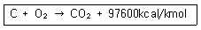
- 8133
- 9760
- 48800
- 97600
(정답률: 68%)
15. 고체 연료의 일반적인 특징으로 옳은 것은?
- 점화 및 소화가 쉽다.
- 연료의 품질이 균일하다.
- 완전연소가 가능하며 연소효율이 높다.
- 연료비가 저렴하고 연료를 구하기 쉽다.
(정답률: 77%)
16. 연소가스의 조성에서 O2를 옳게 나타낸 식은? (단, Lo: 이론 공기량, G : 실제 습연소가스량, m : 공기비이다.)
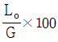
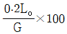
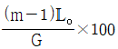
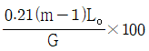
(정답률: 77%)
17. 고체연료의 연소방식으로 옳은 것은?
- 포트식 연소
- 화격자 연소
- 심지식 연소
- 증발식 연소
(정답률: 79%)
18. CO2max는 19.0%, CO2는 10.0%, O2는 0.3%일 때 과잉공기계수(m)는 얼마인가?
- 1.25
- 1.35
- 1.46
- 1.90
(정답률: 60%)
19. 1mol의 이상기체가 40℃, 35 atm으로부터 1 atm 까지 단열 가역적으로 팽창하였다. 최종 온도는 약 몇 K가 되는가? (단, 비열비는 1.67이다.)
- 75
- 88
- 98
- 107
(정답률: 44%)
20. 중유 1kg 속에 수소 0.15kg, 수분 0.003kg이 들어 있다면 이 중유의 고발열량이 104kcal/kg일 때, 이 중유 2kg의 총 저위발열량은 약 몇 kcal인가?
- 12000
- 16000
- 18400
- 20000
(정답률: 61%)
2과목: 열역학
21. 50℃의 물의 포화액체와 포화증기의 엔트로피는 각각 0.703kJ/(kgㆍK), 8.07kJ/(kgㆍK)이다. 50℃의 습증기의 엔트로피가 4kJ/(kgㆍK)일 때 습증기의 건도는 약 몇 %인가?
- 31.7
- 44.8
- 513
- 62.3
(정답률: 64%)
22. 스로틀링(throtting)밸브를 이용하여 Joule-Thomson 효과를 보고자 한다. 압력이 감소함에 따라 온도가 반드시 감소하려면 Joule-Thomson 계수 μ는 어떤 값을 가져야 하는가?
- μ=0
- μ> 0
- μ＜0
- μ≠0
(정답률: 69%)
23. 이상적인 증기압축식 냉동장치에서 압축기 입구를 1, 응축기 입구를 2, 팽창밸브 입구를 3, 증발기 입구를 4로 나타낼 때 온도(T)-엔트로피(S) 선도(수직축 T, 수평축 S)에서 수직선에서 나타나는 과정은?
- 1 - 2 과정
- 2 - 3 과정
- 3 - 4 과정
- 4 - 1 과정
(정답률: 48%)
24. 이상기체로 구성된 밀폐계의 변화과정을 나타낸 것 중 틀린 것은? (단, δq는 계로 들어온 순열량, dh는 엔탈피 변화량, δw는 계가 한 순일, du는 내부에너지의 변화량, ds는 엔트로피 변화량을 나타낸다.
- 등온과정에서 δq=δw
- 단열과정에서 δq=0
- 정압과정에서 δq=ds
- 정적과정에서 δq=du
(정답률: 54%)
25. 공기의 기체상수가 0.287 kJ(kgㆍK)일 때 표준상태(0 ℃, 1기압)에서 밀도는 약 몇 kg/m3인가?
- 1.29
- 1.87
- 2.14
- 2.48
(정답률: 45%)
26. 랭킨(Rankine) 사이클에서 재열을 사용하는 목적은?
- 응축기 온도를 높이기 위해서
- 터빈 압력을 높이기 위해서
- 보일러 압력을 낮추기 위해서
- 열효율을 개선하기 위해서
(정답률: 76%)
27. 불꽃 점화 기관의 기본 사이클인 오토사이클에서 압축비가 10이고, 기체의 비열비는 1.4일 때 이 사이클의 효율은 약 몇 %인가?
- 43.6
- 51.4
- 60.2
- 68.5
(정답률: 50%)
28. 110kPa, 20℃의 공기가 정압과정으로 온도가 50℃만큼 상승한 다음(즉 70℃가 됨), 등온과정으로 압력이 반으로 줄어들었다. 최종 비체적은 최초 비체적의 약 몇 배인가?
- 0.585
- 1.17
- 1.71
- 2.34
(정답률: 35%)
29. 초기조건이 100kPa, 60℃인 공기를 정적과정을 통해 가열한 후 정압에서 냉각과정을 통하여 500kPa, 60℃로 냉각할 때 이 과정에서 전체 열량의 변화는 약 몇 kJ/kmol 인가? (단, 정적비열은 20kJ/(kmokㆍK), 정압비열은 28kJ/(kmolㆍK)이며, 이상기체로 가정한다.)
- -964
- -1964
- -10656
- -20656
(정답률: 47%)
30. 최저 온도, 압축비 및 공급 열량이 같을 경우 사이클의 효율이 큰 것부터 작은 순서대로 옳게 나타낸 것은?
- 오토사이클＞디젤사이클＞사바테사이클
- 사바테사이클＞오토사이클＞디젤사이클
- 디젤사이클＞오토사이클＞사바테사이클
- 오토사이클＞사바테사이클＞디젤사이클
(정답률: 76%)
31. 냉매가 구비해야 할 조건 중 틀린 것은?
- 증발열이 클 것
- 비체적이 작을 것
- 임계온도가 높을 것
- 비열비(정압비열/정적비열)가 클 것
(정답률: 63%)
32. 보일러로부터 압력 1MPa로 공급되는 수증기의 건도가 0.95일 때 이 수증기 1kg당 엔탈피는 약 몇 kcal인가? (단, 1MPa에서 포화액의 비엔탈피는 181.2kcal/kg, 포화증기의 엔탈피는 662.9kcal/kg이다.)
- 457.6
- 638.8
- 810.9
- 1120.5
(정답률: 54%)
33. Gibbs의 상률(상법칙, phase rule)에 대한 설명 중 틀린 것은?
- 상태의 자유도와 혼합물을 구성하는 성분 물질의 수, 그리고 상의 수에 관계되는 법칙이다.
- 평형이든 비평형이든 무관하게 존재하는 관계식이다.
- Gibbs의 상률은 강도성 상태량과 관계한다.
- 단일성분의 물질이 기상, 액상, 고상 중 임의의 2상이 공존할 때 상태의 자유도는 1이다.
(정답률: 69%)
34. 열역학 제2법칙에 관한 다음 설명 중 옳지 않은 것은?
- 100%의 열효율을 갖는 열기관은 존재할 수 없다.
- 단일열원으로부터 열을 전달받아 사이클 과정을 통해 모두 일로 변화시킬수 있는 열기관이 존재할 수 있다.
- 열은 저온부로부터 고온부로 자연적으로 전달되지는 않는다.
- 고립계에서 엔트로피는 항상 증가하거나 일정하게 보존된다.
(정답률: 65%)
35. 1MPa, 400℃인 큰 용기 속의 공기가 노즐을 통하여 100KPa까지 등엔트로피 팽창을 한다. 출구속도는 약 몇 m/s인가? (단, 비열비는 1.4이고, 정압비열은 1.0kJ/(kgㆍK)이며, 노즐 입구에서의 속도는 무시한다.)
- 569
- 8⑤
- 910
- 1107
(정답률: 35%)
36. 온도가 400℃인 열원과 300℃인 열원 사이에서 작동하는 카르노 열기관이 있다. 이 열기관에서 방출되는 300℃의 열은 또 다른 카르노 열기관으로 공급되어, 300℃의 열원과 100℃의 열원 사이에서 작동한다. 이와 같은 복합 카르노 열기관의 전체 효율은 약 몇 % 인가?
- 44.57%
- 59.43%
- 74.29%
- 29.72%
(정답률: 44%)
37. 온도가 각각 -20℃, 30℃인 두 열원 사이에서 작동하는 냉동사이클이 이상적인 역카르노사이클을 이루고 있다. 냉동기에 공급된 일이 15KW이면 냉동용량(냉각열량)은 약 몇 kW인가?
- 2.5
- 3.0
- 76
- 91
(정답률: 40%)
38. 이상기체 5kg이 250℃에서 120℃까지 정적과정을 변화한다. 엔트로피 감소량은 약 몇 kJ/K인가? (단, 정적비열은 0.653 kJ/(kgㆍK)이다.)
- 0.933
- 0.439
- 0.274
- 0.187
(정답률: 40%)
39. 압력이 200kPa로 일정한 상태로 유지되는 실린더 내의 이상기체가 체적 0.3m3에서 0.4m3로 팽창될 때 이상기체가 한 일의 양은 몇 kJ인가?
- 20
- 40
- 60
- 80
(정답률: 58%)
40. 500K의 고온 열저장조와 300K의 저온 열저장조 사이에서 작동되는 열기관이 낼 수 있는 최대 효율은?
- 100%
- 80%
- 60%
- 40%
(정답률: 61%)
3과목: 계측방법
41. 열전대 온도계에 대한 설명으로 옳은 것은?
- 흡습 등으로 열화된다.
- 밀도차를 이용한 것이다.
- 자기가열에 주의해야 한다.
- 온도에 대한 열기전력이 크며 내구성이 좋다.
(정답률: 74%)
42. 지름 400mm인 관속을 5kg/s로 공기가 흐르고 있다. 관속의 압력은 200kPa, 온도는 23℃, 공기의 기체상수 R이 287J/(kgㆍK)라 할 때 공기의 평균 속도는 약 몇 m/s인가?
- 2.4
- 7.7
- 16.9
- 24.1
(정답률: 39%)
43. 다음 열전대 종류 중 측정온도에 대한 기전력의 크기로 옳은 것은?
- IC＞CC＞CA＞PR
- IC＞PR＞CC＞CA
- CC＞CA＞PR＞IC
- CC＞IC＞CA＞PR
(정답률: 66%)
44. 2000℃까지 고온 측정이 가능한 온도계는?
- 방사 온도계
- 백금저항 온도계
- 바이메탈 온도계
- Pt-Rh 열전식 온도계
(정답률: 70%)
45. 다음 그림과 같은 경사관식 압력계에서 P2는 50kg/m2일 때 측정압력 P1은 약 몇 kg/m2인가? (단, 액체의 비중은 1이다.)
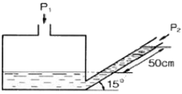
- 130
- 180
- 320
- 530
(정답률: 50%)
46. SI 기본단위를 바르게 표현한 것은?
- 시간-분
- 질량-그램
- 길이-밀리미터
- 전류-암페어
(정답률: 79%)
47. 전자유량계의 특징으로 틀린 것은?
- 응답이 빠른 편이다.
- 압력손실이 거의 없다.
- 높은 내식성을 유지할 수 있다.
- 모든 액체의 유량 측정이 가능하다.
(정답률: 73%)
48. 오르자트식 가스분석계로 측정하기 어려운 것은?
- O2
- CO2
- CH4
- CO
(정답률: 68%)
49. 불연속 제어로서 탱크의 액위를 제어하는 방법으로 주로 이용되는 것은?
- P 동작
- PI 동작
- PD 동작
- 온ㆍ오프 동작
(정답률: 70%)
50. 관로에 설치된 오리피스 전후의 압력차는?
- 유량의 제곱에 비례한다.
- 유량의 제곱근에 비례한다.
- 유량의 제곱에 반비례한다.
- 유량의 제곱근에 반비례한다.
(정답률: 49%)
51. 염화리튬이 공기 수증기압과 평형을 이룰 때 생기는 온도저하를 저항온도계로 측정하여 습도를 알아내는 습도계는?
- 듀셀 노점계
- 아스만 습도계
- 광전관식 노점계
- 전기저항식 습도계
(정답률: 66%)
52. 유량 측정에 쓰이는 Tap 방식이 아닌 것은?
- 베나 탭
- 코어 탭
- 압력 탭
- 플랜지 탭
(정답률: 51%)
53. 다음에서 설명하는 제어동작은?
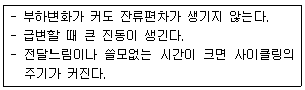
- D 동작
- PI 동작
- PD 동작
- P 동작
(정답률: 72%)
54. 제어시스템에서 응답이 계단변화가 도입된 후에 얻게 될 최종적인 값을 얼마나 초과하게 되는지를 나타내는 척도는?
- 오프셋
- 쇠퇴비
- 오버슈트
- 응답시간
(정답률: 73%)
55. 다음 온도계 중 측정범위가 가장 높은 것은?
- 광온도계
- 저항온도계
- 열전온도계
- 압력온도계
(정답률: 80%)
56. 기계연료의 시험방법 중 CO의 흡수액은?
- 발연 황산액
- 수산화칼륨 30% 수용액
- 알칼리성 피로카롤 용액
- 암모니아성 염화 제1동 용액
(정답률: 68%)
57. 차압식 유량계의 종류가 아닌 것은?
- 벤투리
- 오리피스
- 터빈유량계
- 플로우 노즐
(정답률: 72%)
58. 단열식 열량계로 석탄 1.5g을 연소시켰더니 온도가 4℃ 상승하였다. 통내의 유량이 2000g, 열량계의 물당량이 500g 일 때 이 석탄의 발열량은 약 몇 J/g인가? (단, 물의 비열은 4.19J/gㆍK이다.)
- 2.23×104
- 2.79×104
- 4.19×104
- 6.98×104
(정답률: 50%)
59. 2원자분자를 제외한 CO2, CO, CH4등의 가스를 분석할 수 있으며, 선택성이 우수하고 저농도 분석에 적합한 가스 분석법은?
- 적외선법
- 음향법
- 열전도율법
- 도전율법
(정답률: 68%)
60. 국제단위계(SI)에서 길이단위의 설명으로 틀린 것은?
- 기본단위이다.
- 기호는 K이다.
- 명칭은 미터이다.
- 빛이 진공에서 1/229792458초 동안 진행한 경로의 길이이다.
(정답률: 77%)
4과목: 열설비재료 및 관계법규
61. 샤모트(chamotte) 벽돌에 대한 설명으로 옳은 것은?
- 일반적으로 가공률이 크고 비교적 낮은 온도에서 연화되며 내스폴링성이 좋다.
- 흑연질 등을 사용하며 내화도와 하중연화점이 높고 열 및 전기전도도가 크다.
- 내식성과 내마모성이 크며 내화도는 SK 35 이상으로 주로 고온부에 사용된다.
- 하중 연화점이 높고 가소성이 커 염기성 제강로에 주로 사용된다.
(정답률: 49%)
62. 에너지이용 합리화법에 따라 최대 1천만원 이하의 벌금에 처할 대상자에 해당되지 않는 자는?
- 검사대상기기조종자를 정당한 사유 없이 선임하지 아니한 자
- 검사대상기기의 검사를 정당한 사유없이 받지 아니한 자
- 검사에 불합격한 검사대상기기를 임의로 사용한 자
- 최저소비효율기준에 미달된 효율관리기자재를 생산한 자
(정답률: 68%)
63. 배관설비의 지지를 위한 필요조건에 관한 설명으로 틀린 것은?
- 온도의 변화에 따른 배관신축을 충분히 고려하여야 한다.
- 배관 시공 시 필요한 배관기울기를 용이하게 조정할 수 있어야 한다.
- 배관설비의 진동과 소음을 외부로 쉽게 전달할 수 있어야 한다.
- 수격현상 및 외부로부터 진동과 힘에 대하여 견고하여야 한다.
(정답률: 80%)
64. 길이 7m, 외경 200mm, 내경 190mm의 탄소강관에 360℃ 과열증기를 통과시키면 이 때 늘어나는 관의 길이는 몇 mm인가? (단, 주위온도는 20℃이고, 관의 선팽창계수는 0.000013 mm/mmㆍ℃이다.)
- 21.15
- 25.71
- 30.94
- 36.48
(정답률: 45%)
65. 에너지이용 합리와법에 따라 에너지사용계획을 수립하여 산업통상자원부장관에게 제출하여야 하는 민간사업주관자의 기준은?
- 연간 5백만 킬로와트시 이상의 전력을 사용하는 시설을 설치하려는 자
- 연간 1천만 킬로와트시 이상의 전력을 사용하는 시설을 설치하려는 자
- 연간 1천 5백만 킬로와트시 이상의 전력을 사용하는 시설을 설치하려는 자
- 연간 2천만 킬로와트시 이상의 전력을 사용하는 시설을 설치하려는 자
(정답률: 75%)
66. 관의 신축량에 대한 설명으로 옳은 것은?
- 신축량은 관의 열팽창계수, 길이, 온도차에 반비례한다.
- 신축량은 관의 열팽창계수, 길이, 온도차에 비례한다.
- 신축량은 관의 길이, 온도차에는 비례하지만, 열팽창계수에는 반비례한다.
- 신축량은 관의 열팽창계수에 비례하고 온도차와 길이에 반비례한다.
(정답률: 77%)
67. 에너지이용 합리와법에 따라 인정검사대상기기 조종자의 교육을 이수한 자가 조종할 수 없는 것은?
- 압력 용기
- 용량이 581.5킬로와트인 열매체를 가열하는 보일러
- 용량이 700 킬로와트의 온수발생 보일러
- 최고사용압력이 1MPa 이하이고, 전열면적이 10 제곱미터 이하인 증기보일러
(정답률: 72%)
68. 에너지이용 합리화법상의 “목표에너지원단위”란?
- 열사용기기당 단위시간에 사용할 열의 사용목표량
- 각 회사마다 단위기간 동안 사용할 열의 사용목표량
- 에너지를 사용하여 만드는 제품의 단위당 에너지사용목표량
- 보일러에서 증기 1톤을 발생할 때 사용할 연료의 사용목표량
(정답률: 79%)
69. 에너지이용 합리화법상의 효율관리기자재에 속하지 않는 것은?
- 전기철도
- 삼상유도전동기
- 전기세탁기
- 자동차
(정답률: 65%)
70. 가마를 축조할 때 단열재를 사용함으로써 얻을 수 있는 효과로 틀린 것은?
- 작업 온도까지 가마의 온도를 빨리 올릴 수 있다.
- 가마의 벽을 얇게 할 수 있다.
- 가마내의 온도 분포가 균일하게 된다.
- 내화벽돌의 내ㆍ외부 온도가 급격히 상승한다.
(정답률: 70%)
71. 에너지이용 합리와법에 따라 검사대상기기 조종자의 신고사유가 발생한 경우 발생한 날로부터 며칠 이내에 신고해야 하는가?
- 7일
- 15일
- 30일
- 60일
(정답률: 66%)
72. 다음은 보일러의 급수밸브 및 체크밸브 설치 기준에 관한 설명이다. ()안에 알맞은 것은?
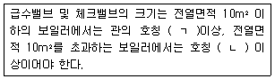
- ㄱ : 5A, ㄴ : 10A
- ㄱ : 10A, ㄴ : 15A
- ㄱ : 15A, ㄴ : 20A
- ㄱ : 20A, ㄴ : 30A
(정답률: 75%)
73. 에너지이용 합리화법에 따라 산업통상자원부장관은 에너지를 합리적으로 이용하게 하기 위하여 몇 년 마다 에너지이용 합리화에 관한 기본계획을 수립하여야 하는가?
- 2년
- 3년
- 5년
- 10년
(정답률: 77%)
74. 산성 내화물이 아닌 것은?
- 규석질 내화물
- 납석질 내화물
- 샤모트질 내화물
- 마그네시아 내화물
(정답률: 74%)
75. 고압 배관용 탄소강관에 대한 설명으로 틀린 것은?
- 관의 소재로는 킬드강을 사용하여 이음매 없이 제조된다.
- KS 규격 기호로 SPPS 라고 표기한다.
- 350℃이하, 100kg/cm2 이상의 압력범위에 사용이 가능하다.
- NH3 합성용 배관, 화학공법의 고압유체 수송용에 사용한다.
(정답률: 78%)
76. 크롬이나 크롬마그네시아 벽돌이 고온에서 산화철을 흡수하여 표면이 부풀어 오르고 떨어져 나가는 현상은?
- 버스팅(bursting)
- 스폴링(spalling)
- 슬래킹(slaking)
- 큐어링(curing)
(정답률: 73%)
77. 내화물의 구비조건으로 틀린 것은?
- 상온에서 압축강도가 작을 것
- 내마모성 및 내침식성을 가질 것
- 재가열 시 수축이 적을 것
- 사용온도에서 연화변형하지 않을 것
(정답률: 73%)
78. 에너지이용 합리화법에 따라 에너지저장의무를 부과할 수 있는 대상자가 아닌 자는?
- 전기사업법에 의한 전기사업자
- 도시가스사업법에 의한 도시가스사업자
- 풍력사업법에 의한 풍력사업자
- 석탄산업법에 의한 석탄가공업자
(정답률: 69%)
79. 배관의 신축이음에 대한 설명으로 틀린 것은?
- 슬리브형은 단식과 복식의 2종류가 있으며, 고온, 고압에 사용한다.
- 루프형은 고압에 잘 견디며, 주로 고압증기의 옥외 배관에 사용한다.
- 벨로즈형은 신축으로 인한 응력을 받지 않는다.
- 스위블형은 온수 또는 저압증기의 배관에 사용하며, 큰 신축에 대하여는 누설의 염려가 있다.
(정답률: 60%)
80. 에너지이용 합리화법에 따른 특정열 사용기자재가 아닌 것은?
- 주철제 보일러
- 금속 소둔로
- 2종 압력용기
- 석유 난로
(정답률: 70%)
5과목: 열설비설계
81. 급수에서 ppm 단위에 대한 설명으로 옳은 것은?
- 물 1mL 중에 함유한 시료의 양을 g으로 표시한 것
- 물 100mL 중에 함유한 시료의 양을 mg으로 표시한 것
- 물 1000mL 중에 함유한 시료의 양을 g으로 표시한 것
- 물 1000mL 중에 함유한 시료의 양을 mg으로 표시한 것
(정답률: 77%)
82. 그림과 같이 가로×세로×높이가 3×1.5×0.03m 인 탄소 강판이 놓여 있다. 열전도계(K)가 43W/mㆍK이며, 표면온도는 20℃였다. 이 때 탄소강판 아래 면에 열유속(q“=q/A) 600kcal/m2ㆍh을 가할 경우, 탄소강판에 대한 표면온도 상승[△T(℃)]은?
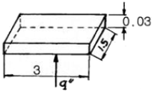
- 0.243℃
- 0.264℃
- 0.486℃
- 1.973℃
(정답률: 34%)
83. 금속판을 전열체로 하여 유체를 가열하는 방식으로 열팽창에 대한 염려가 없고 플랜지이음으로 되어 있어 내부수리가 용이한 열교환기 형식은?
- 유동두식
- 플레이트식
- 융그스트롬식
- 스파이럴식
(정답률: 52%)
84. 보일러의 용량을 산출하거나 표시하는 값으로 적합하지 않은 것은?
- 상당증발량
- 보일러마력
- 전열면적
- 재열계수
(정답률: 71%)
85. 강제 순환식 수관 보일러는?
- 라몬트(Lamont) 보일러
- 타쿠마(Takuma) 보일러
- 슐저(Sulzer) 보일러
- 벤슨(Benson) 보일러
(정답률: 59%)
86. 연료 1kg이 연소하여 발생하는 증가량의 비를 무엇이라고 하는가?
- 열발생률
- 환산증발배수
- 전열면 증발률
- 증기량 발생률
(정답률: 58%)
87. 저온부식의 방지 방법이 아닌 것은?
- 과잉공기를 적게 하여 연소한다.
- 발열량이 높은 황분을 사용한다.
- 연료첨가제(수산화마그네슘)를 이용하여 노점온도를 낮춘다.
- 연소 배기가스의 온도가 너무 낮지 않게 한다.
(정답률: 68%)
88. 보일러 송풍장치의 회전수 변환을 통한 급기풍량 제어를 위하여 2극 유도전동기에 인버터를 설치하였다. 주파수가 55Hz일 대 유도전동기의 회전수는?
- 1650 RPM
- 1800 RPM
- 3300 RPM
- 3600 RPM
(정답률: 50%)
89. 보일러의 성능시험방법 및 기준에 대한 설명으로 옳은 것은?
- 증기건도의 기준은 강철제 또는 주철제로 나누어 정해져 있다.
- 측정은 매 1시간 마다 실시한다.
- 수위는 최초 측정치에 비해서 최종 측정치가 적어야 한다.
- 측정기록 및 계산양식은 제조사에서 정해진 것을 사용한다.
(정답률: 65%)
90. 동일 조건에서 열교환기의 온도효율이 높은 순서대로 나열한 것은?
- 항류＞직교류＞병류
- 병류＞직교류＞항류
- 직교류＞향류＞병류
- 직교류＞병류＞향류
(정답률: 75%)
91. 어떤 연료 1kg당 발열량이 6320kcal이다. 이 연료 50kg/h을 연소시킬 때 발생하는 열이 모두 일로 전환된다면 이 때 발생하는 동력은?
- 300 PS
- 400 PS
- 500 PS
- 600 PS
(정답률: 49%)
92. 유체의 압력손실은 배관 설계 시 중요한 인자이다. 압력손실과의 관계로 틀린 것은?
- 압력손실은 관마찰계수에 비례한다.
- 압력손실은 유속의 제곱에 비례한다.
- 압력손실은 관의 길이에 반비례한다.
- 압력손실은 관의 내경에 반비례한다.
(정답률: 67%)
93. 공기예열기의 효과에 대한 설명으로 틀린 것은?
- 연소효율을 증가시킨다.
- 과잉공기량을 줄일 수 있다.
- 배기가스 저항이 줄어든다.
- 저질탄 연소에 효과적이다.
(정답률: 56%)
94. 이중 열교환기의 총괄전열계수가 69kcal/m2ㆍhㆍ℃일 때, 더운 액체와 찬 액체를 향류로 접속시켰더니 더운 면의 온도가 65℃에서 25℃로 내려가고 찬 면의 온도가 20℃에서 53℃로 올라갔다. 단위면적당의 열교환량은?
- 498 kcal/m2ㆍh
- 552 kcal/m2ㆍh
- 2415 kcal/m2ㆍh
- 2760 kcal/m2ㆍh
(정답률: 41%)
95. 연관식 패키지 보일러와 랭카셔 보일러의 장ㆍ단점에 대한 비교 설명으로 틀린 것은?
- 열효율은 연관식 패키지 보일러가 좋다.
- 부하변동에 대한 대응성은 랭카셔 보일러가 좋다.
- 설치 면적당의 증발량은 연관식 패키지 보일러가 크다.
- 수처리는 연관식 패키지 보일러가 더 간단하다.
(정답률: 58%)
96. 인젝터의 작동순서로 옳은 것은?
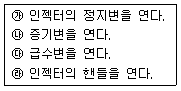
- ㉮→㉯→㉰→㉱
- ㉮→㉰→㉯→㉱
- ㉱→㉯→㉰→㉮
- ㉱→㉰→㉯→㉮
(정답률: 66%)
97. 프라이밍 및 포밍 발생 시의 조치에 대한 설명으로 틀린 것은?
- 안전밸브를 전개하여 압력을 강하시킨다.
- 증기 취출을 서서히 한다.
- 연소량을 줄인다.
- 저압운전을 하지 않는다.
(정답률: 54%)
98. 방열 유체의 전열 유니트(NTU)가 3.5, 온도차가 1⑤℃이고, 열교환기의 전열효율이 1 일 때 대수평균온도차(LMTD)는?
- 22.3℃
- 30℃
- 62℃
- 367.5℃
(정답률: 52%)
99. 보일러수로서 가장 적절한 pH는?
- 5 전후
- 7 전후
- 11 전후
- 14 이상
(정답률: 78%)
100. 노통식 보일러에서 파형부의 길이가 230mm 미만인 파형노통의 최소 두께(t)를 결정하는 식은? (단, P는 최고 사용압력(MPa), D는 노통의 파형부에서의 최대 내경과 최소 내경의 평균치(mm), C는 노통의 종류에 따른 상수이다.)
- 10PD
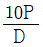
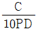
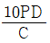
(정답률: 72%)